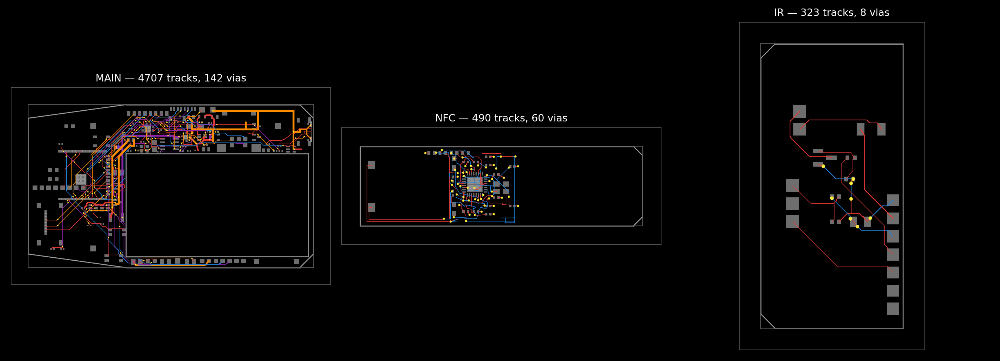
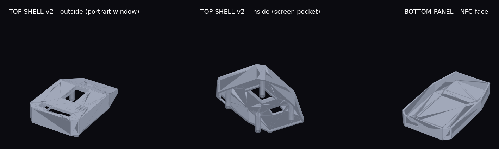
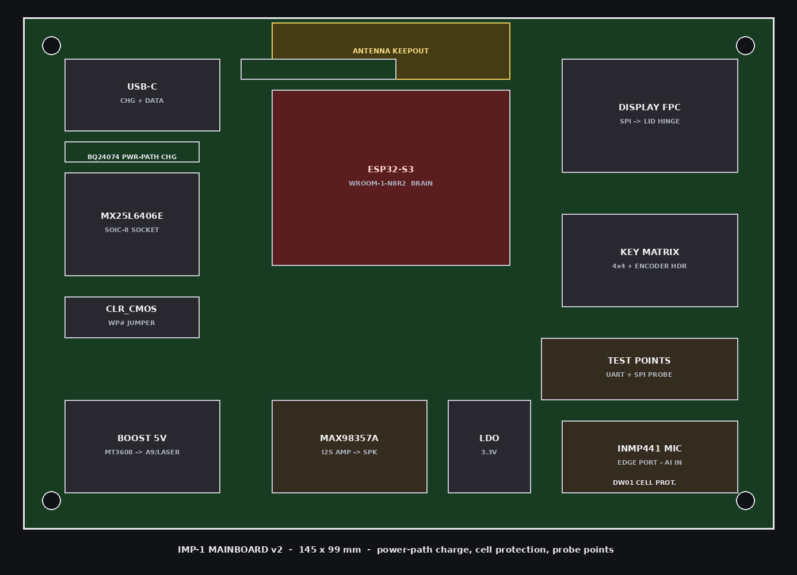
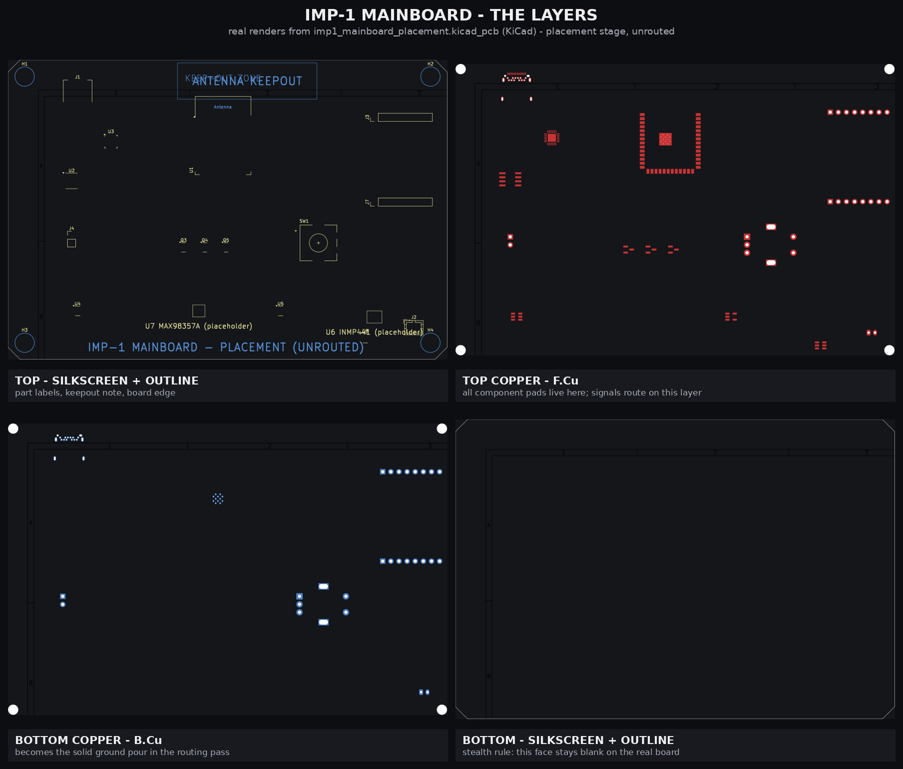

IMP-1
A Flipper-class portable hardware exploration device, designed and built from salvaged electronics — no commercial dev kits.
> status
// 2026-11-16
Firmware: clean build — 0 errors, 0 warnings (ESP32-S3, 12 tools).
Boards: in layout — main board in respin, NFC board in final routing, IR board complete. Nothing fabricated yet; fabrication is gated on a clean design-rule check.
> sponsors
Two sponsorship slots are open on IMP-1's first fabrication run. Sponsors are featured here the day support lands — logo, link, and credit in every build post that uses their contribution.
PCB + ASSEMBLY
- Logo + link in this section
- Featured credit in build-log posts and videos
- Logo on the project documentation
ENCLOSURE PRINTING
- Logo + link in this section
- Featured credit in build-log posts and videos
- Logo on the project documentation
To take a slot, reach out via DeadbugLabs on Facebook (see > links below).
> hardware
- ESP32-S3 — native USB
- ST25R3916B NFC front-end
- CC1101 Sub-GHz radio
- 1.47″ 172×320 colour display
- Socketed SPI flash with a physical write-protect lock
- microSD storage
- 2× 18650 cells, 1S2P — 25.9 Wh
- Salvaged Uniden Stealth LRD 767 shell
> firmware
Twelve tools on a frozen C API, one common shell:
- Sub-GHz
- NFC
- IR
- BadUSB
- GPIO
- U2F
- Archive
- Flash Lab
- Security Auto-Audit (passive — inventory and resilience checklist for your own gear)
- RFID / iButton / 1-Wire — landing on IMP-2
Source: github.com/deadbuglabs/imp-1
> the_build
IMP-1 was designed end-to-end on a phone, in Termux — schematics, board layout, firmware, and this page. The parts discipline is salvaged-first: donor boards, a salvaged shell, and new silicon only where salvage can't go. The device is a multi-board stack — main board, NFC front-end board, IR board — joined by board-to-board connectors, sized to the shell it lives in.
> gallery




> links
Hardware sponsorship: open — see > sponsors above for the two open slots.